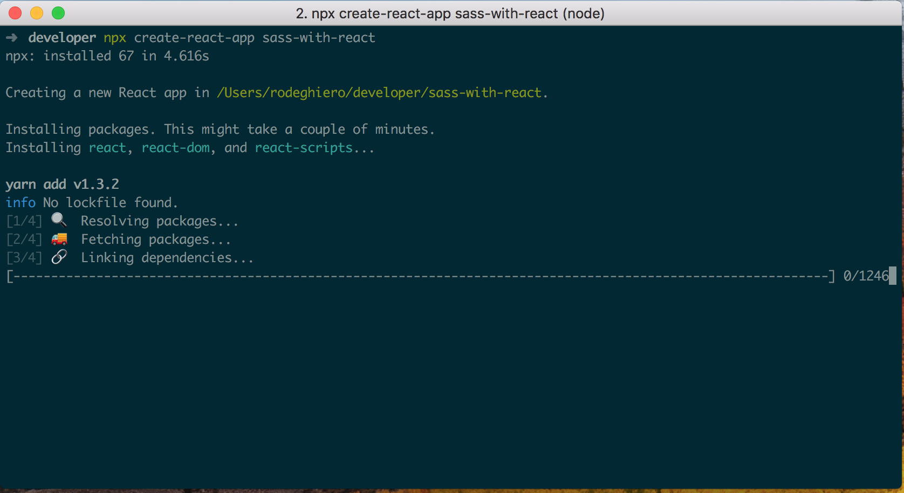

Autor: MárioRodeghiero
Autor: MárioRodeghiero
Data: 05/06/2018
Sass + React.js
"Como integrar Sass e React.js"
Neste artigo vou mostrar os passos para instalar e utilizar o
Sass com
React.js. Vamos usar o
created-react-app como base para nosso projeto, mas antes de apresentar como iniciar um projeto com o created-react-app
é necessário que você tenha instalado:
Node.js e
npx.
$ npm install -g npx
Instalando created-react-app
Após ter os pré-requisitos instalado em seu computador, para criarmos o projeto, basta rodar o seguinte comando abaixo, substituindo o "nome-do-projeto", por o nome desejado.
$ npx created-react-app nome-do-projeto
Após executar o comando, devemos entrar na pasta do projeto e executar mais alguns comandos para instalar e integrar o Sass com o react.
$ cd nome-do-projeto
$ yarn add sass-loader node-sass --dev
ou$ npm install sass-loader node-sass --save-dev
Passo 1
Agora que já instalamos os módulos necessários, devemos ejetar os arquivos de configurações do created-react-app e realizar as alterações necessárias para trabalharmos com Sass.
$ npm run eject
Passo 2
Em seguida vamos editar os dois arquivos abaixo, onde estão as configurações do webpack na pasta
"/config".
O primeiro é o arquivo de desenvolvimento, o segundo é o arquivo de produção.
Editando o arquivo de desenvolvimento
Abra o arquivo de desenvolvimento e depois role o scroll até localizar onde estão as configurações do "css", como mostrado no código abaixo:
test: /\.css$/,
use: [
require.resolve('style-loader'),
{
loader: require.resolve('css-loader'),
options: {
importLoaders: 1,
},
},
Após ter localizado, você precisa realizar as seguintes alterações abaixo. Alterando primeiramente para ler todos arquivos que terminam com ".scss", onde é usado uma expressão regular para indicar e depois é necessário inserir o "sass-loader" para realizar a transformação do arquivo original para JavaScript.
test: /\.scss$/,
use: [
require.resolve('style-loader'),
{
loader: require.resolve('css-loader'),
options: {
importLoaders: 1,
},
},
{
loader: require.resolve('sass-loader')
},
Editando o arquivo de produção
Já no arquivo de produção, você vai encontrar a seguinte configuração abaixo:
test: /\.css$/,
loader: ExtractTextPlugin.extract(
Object.assign(
{
fallback: {
loader: require.resolve('style-loader'),
options: {
hmr: false,
},
},
use: [
{
loader: require.resolve('css-loader'),
options: {
importLoaders: 1,
minimize: true,
sourceMap: shouldUseSourceMap,
},
},
Então é só alterar, como fizemos no passo anterior, mas a única diferença é que este arquivo possui algumas configurações adicionais, como não iremos abordar sobre webpack neste artigo, você pode simplesmente subsistir o código acima, por este:
test: /\.scss$/,
loader: ExtractTextPlugin.extract(
Object.assign(
{
fallback: {
loader: require.resolve('style-loader'),
options: {
hmr: false,
},
},
use: [
{
loader: require.resolve('css-loader'),
options: {
importLoaders: 1,
minimize: true,
sourceMap: shouldUseSourceMap,
},
},
{
loader: require.resolve('sass-loader')
},
Passo 3
Agora você pode deletar os arquivos
".css" e criar seus arquivos
".scss" em qualquer lugar, dentro da pasta
"src" e estilizar suas paginas, usufruindo do poder que o
Sass oferece.
Obs: Não esqueça de deletar os imports dos arquivos "Css" e importar os novos arquivos "Sass" para o React.js funcionar
normalmente.
Thanks!!